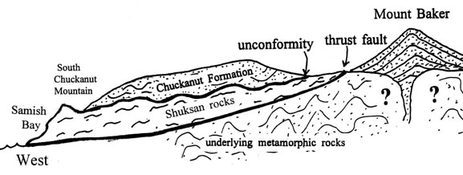

Geological Wonders of the Arboretum
The Swampland
Picture yourself in a swampy wetland. The humidity in the air sits heavily on your chest, hair is frizzy or plastered to your head, and yet the beauty of the moss and foliage cannot be denied. No, you are not standing in the swamps of Louisiana, but in the Pacific Northwest over fifty million years ago, during the Eocene period. As you roam the swampland, you are disappointed that the dinosaurs are already gone, but the Eohippus also known as the Dawn Horse and ancient relatives of the Tapir are among your companions.
Dawn Horse (left, brittanica.com) & Tapir (right, by Stephen Nash-tapirs.org)
The Chuckanut Mountains are Born
What does an ancient swamp matter in the grand scheme of things? It’s not just a place Kermit hangs out. No, this swamp was imperative in the formation of the Chuckanut Mountains, which are part of the Cascades Range. Rocks and minerals known as sediment accumulated in this swampy riverbank basin which produced the majestic mountains we see today.
Present Day – The Arboretum
Now that time has shifted to present day. You are at the foot of the Chuckanut Mountains. You look in awe at nearly four miles of sandstone minerals, with the sunlight sparkling off the grains of crystal. This awe-inspiring process began fifty million years ago and hasn’t slowed down. Tectonic plates, a scientific term for the earth’s crust breaking into rock chunks and shifting beneath the earth surface, sent these compounds on a journey across the Puget Sound, to the North Cascades foothills. These foothills include something dear to Bellingham resident’s hearts, the Sehome Hill Arboretum located at Western Washington University’s campus. What makes this formation so valuable?
The Journey Continues!
Alder Leaf Fossil
Your journey is not over yet, it has just begun. Remember the swamp you visited fifty million years ago; this is where ferns and palms were born. The murky swamp is the reason you have access to such fossils currently found throughout the Arboretum. Plants and other forms of vegetation such as seeds, nuts, leaves, and even tree trunks sunk below the surface, trapping them underneath river sediment, forming fossils. One such fossil is the Alder Leaf, pictured right.
Think of it! Vegetation that was here long before you were even thought of, let alone born, has been preserved for you to discover! Much like books can provide adventure and insight, so does hiking and exploring glorious rock formations such as the Arboretum. You can learn about the ecosystem that allows a variety of plants and animals to survive and thrive there simply by the gift of observation. What can we learn about ourselves through the process of studying the geology of this beautiful arboretum? Either visit this majestic park for yourself, or research its geology and history via the Western Libraries website.
Something for Everyone at the Arboretum!
- Students - listen to the sounds of nature as you study.
- Hikers - appreciate the multitude of trails while you enjoy the scenery.
- Families - enjoy the different birds and other animals who make the Arboretum their home.
- Retirees - take time to enjoy nature. You deserve it!
Helpful Definitions
Eohippus (Dawn Horse): Ancestor to the modern horse. Standing up to about two feet tall, this miniature horse was about the size of a large dog, such as a Boxer.
Eocene Period: A period between fifty-six million and approximately thirty-four million years ago. Climate was hot and humid which contributed to swamp-like conditions.
Sandstone: Particles of rock made up of different colored sand bonded together over millennia. Commonly found in neutral tones such as tan, brown, and yellow, but can also come in shades of red and pink.
Sediment: Rocks and minerals that accumulate at the bottom of waterbodies. Sand at the local beach is considered a sediment.
Tapir: Relative of the Rhinoceros-native to tropical lands such as South America. Built like a pig with an elephant like trunk.
Tectonic Plates: Not to be confused with dinnerware. Tectonic makes up the earth’s crust. The plates are the layers that are broken up like puzzle pieces and shift around underneath the earth’s surface.